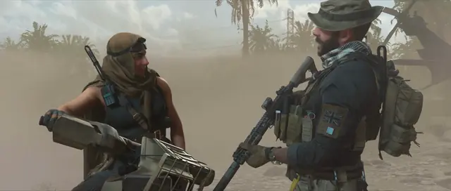
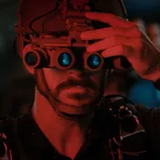

Skip to content
ocean’s
Choose a collection

Modern Warfare II · John Price
00:03:33:00
Call of Duty
C
a
l
l
o
f
D
u
t
y
John Price · Cutscenes · MW4 trailers

SIX
S
I
X
Joe Graves · Seasons 1 and 2